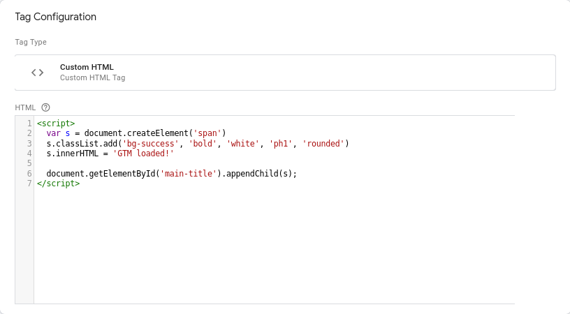
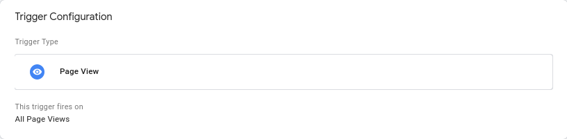
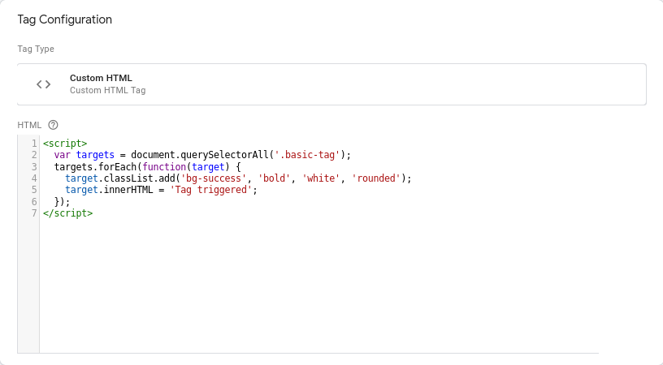
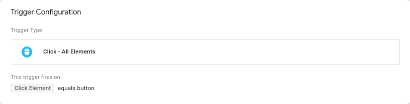

I worked in a web shop back in 2006 and we were asked sometimes to add racking pixels on pages on our site. In order to do so we had to update the html for several pages on the site manually, we had to deploy our changes and test them. The feedback loop was horrible, and a new tag or tracking pixel took ages to set up.
This is where GTM comes to help. Most of the tracking scripts/pixels required to use third party ads optimisation need just some minutes set up, with deployment and feedback loop leveraging on the google platform
There are 3 key concepts in google tag manager:
Let's imagine you have a third party script you want to include in your site, whether it's some javascript code or just an image tag loading a 'pixel'; You can also run some javascript you wrote yourself just to test how GTM works (this is what I'm doing)
To do so you can just add a tag. for instance the tag to show 'GTM loaded' above just uses this code:
That tag adds an extra element to html tags that have the id 'main-title' the tag would show 'GTM loaded!' text
But we know what to load... We don't know when to load it. In order to tell GTM *when* to load a tag we need to have triggers.
The tag above works on a simple concept, when the page is loaded we load the tag. The set up for the GTM Loaded tag looks like this:
But what if we want to have something more sophisticated? e.g. when a button is clicked?
You can define different trigger based on your needs, let's assume you want to have a trigger when a button is clicked
The code for the tag simply changes the content of any html element with a class 'basic-tag' when the button is clicked
The trigger for that tag fires every time a button is clicked
TODO: Add example with datalayer push custom event
You can imagine the trigger for the example above being 'too generic' meaning that any click on button would end up triggering any tag.
To abvoid that you tell GTM to run the trigger only on specific data attributes, so you don't end up firing the tag too often.
Up until now we saw how to set up variables and triggers set up using what is already available on the page. It's also possible to have triggers fired via javascript or variable set up via javascript on the page. This is particularly useful to get data across multiple tags or trigger events on single page applications.
If you want, for instance fire triggers on single page apps you can use the following:
var button = document.querySelector('.javascript-event');
button.onclick(function() {
dataLayer.push({'event': 'javascript-event-example'}); // This is the important bit, you can use on single page apps.
})
Variables can also be provided to gtm by adding javascript code in the page and passing the values to the data layer, for example by adding this code
window.dataLayer = window.dataLayer || [];
dataLayer.push({text: 'Text has been changed'})
You can then use, after creating a variable on GTM the value for the text field in the tag code
var target = document.querySelector('.datalayer-variable-example');
target.classList.add('bg-success', 'bold', 'white', 'rounded');
target.innerHTML = '{{ "{{Datalayer text"}}}}';
Here the example:
Variables provide a way to tell GTM what to expect from your website. GTM uses the variables to declare to validate your tags and your scripts; in this way you can avoid most common issues and keeps tags consistent when you decide to rename your variables.
We looked into the main concepts used in TagManager. Given the goal of GTM is to serve tags on your site you need to answer what (I.E. tags), when (I.E. triggers), how (I.E. variables). The code provided is very clunky, and it was set up only for this demo, in fact, I suggest you to often look at your setup and look for opportunities for refactorings as the set up can easily get out of hand. That aside I suggest for you to look at the details of different tags/triggers/variables to see what fits your needs.